- fish of the day 21.05.2026
- Jenynsia multidentata
-
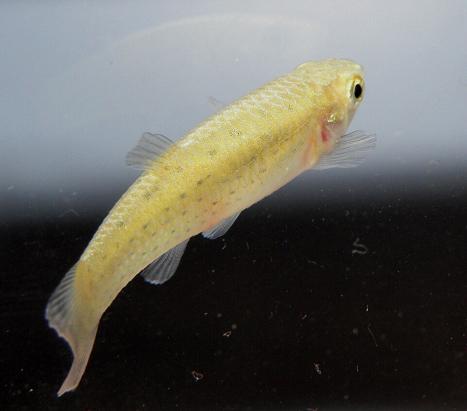
- fish of the day 20.05.2026
- Salmo peristericus
-
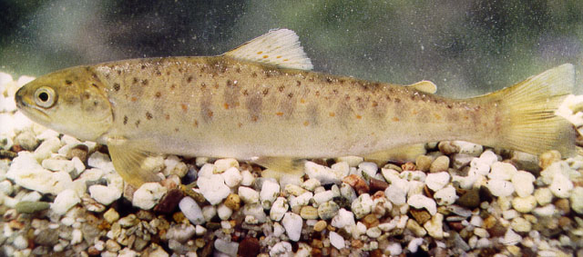
- fish of the day 19.05.2026
- Bagrus filamentosus
-
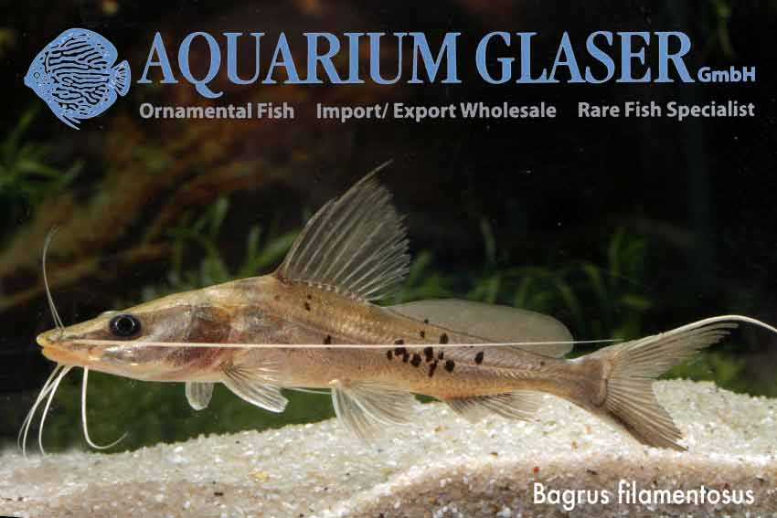
- fish of the day 18.05.2026
- Isogomphodon oxyrhynchus, Daggernose shark
-
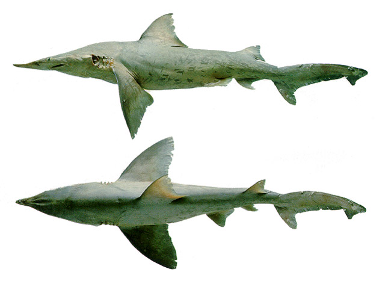
- fish of the day 17.05.2026
- Cyphomyrus discorhynchus, Zambesi parrotfish
-
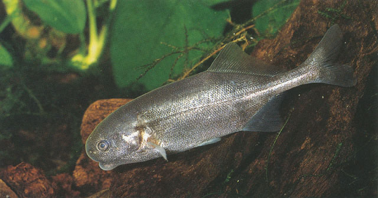
- fish of the day 16.05.2026
- Romsnogobio belingi, Northern whitefin gudgeon
-
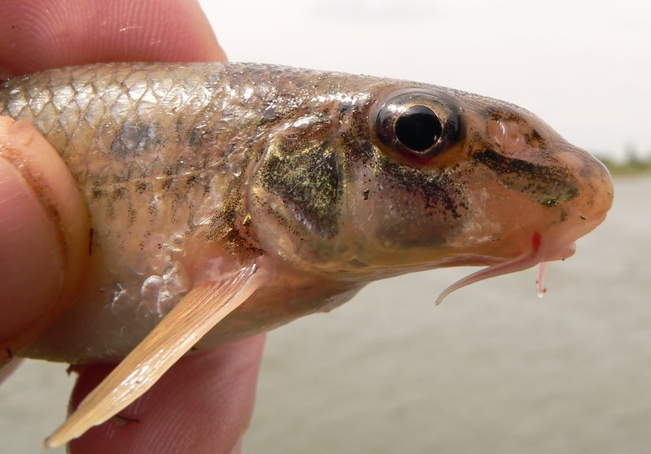
- fish of the day 15.05.2026
- Symphodus cinereus, Grey wrasse
-
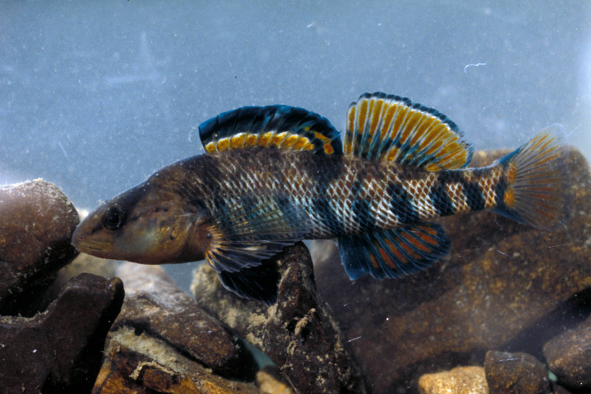
- fish of the day 14.05.2026
- Garra flavatra
-
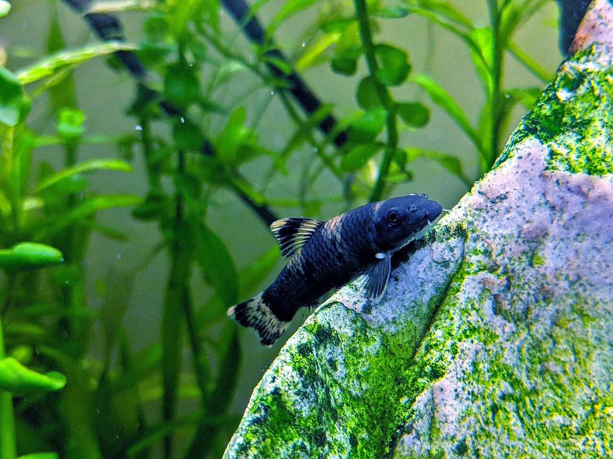
- fish of the day 13.05.2026
- Guentherus katoi
-
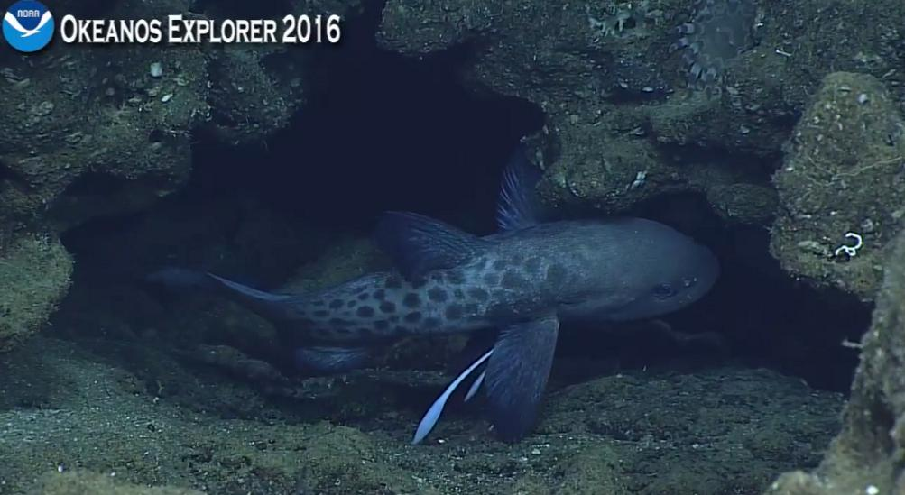
- fish of the day 12.05.2026
- Melanocharacidium pectorale
-
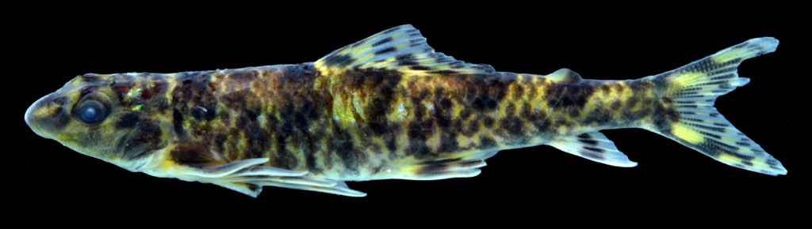
- fish of the day 11.05.2026
- Schistura alticrista
-
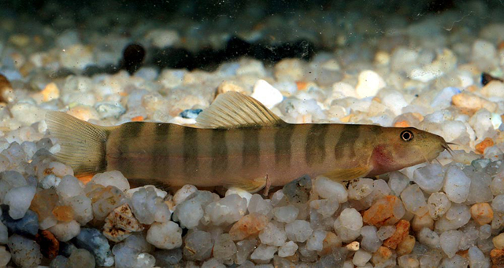
- fish of the day 10.05.2026
- Discogobio yunnanensis
-
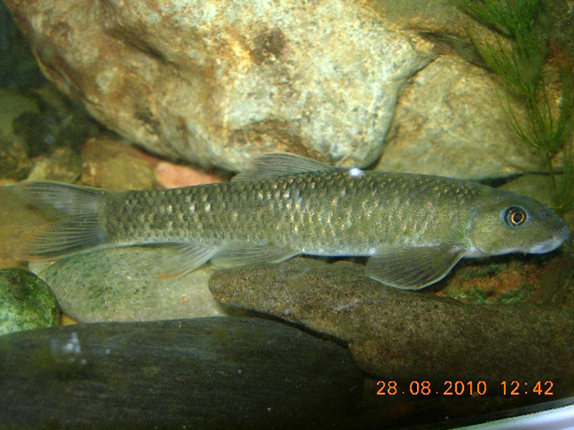
- fish of the day 09.05.2026
- Rondeletia loricata
-
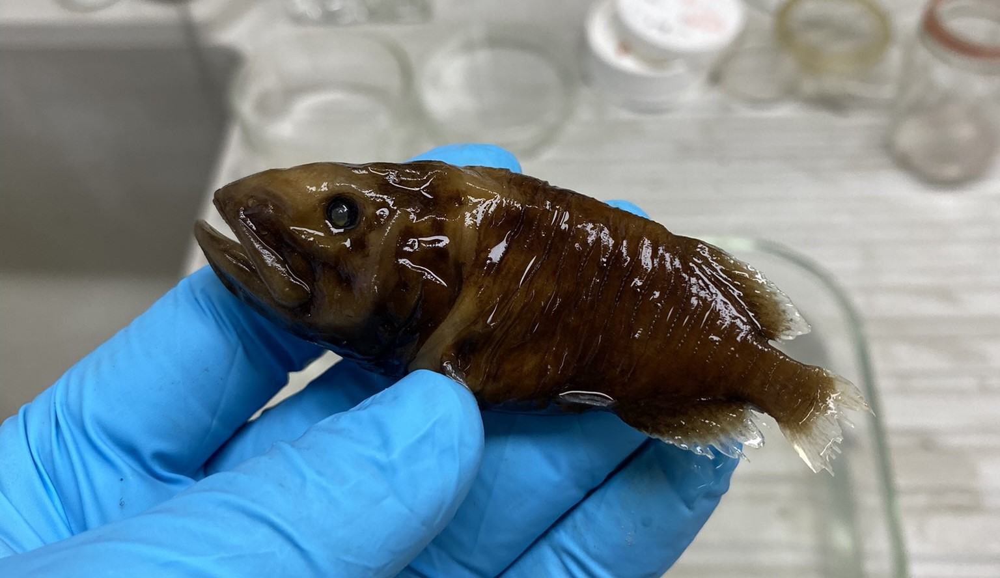
- fish of the day 08.05.2026
- Gobius niger, Black goby
-
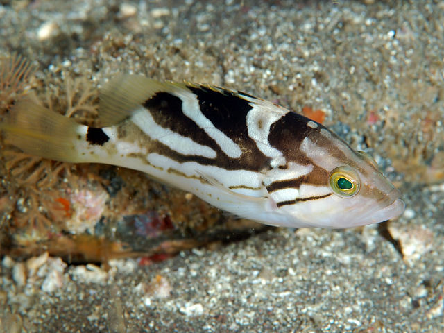
- fish of the day 07.05.2026
- Haemulon flavolineatum, banana grunt
-
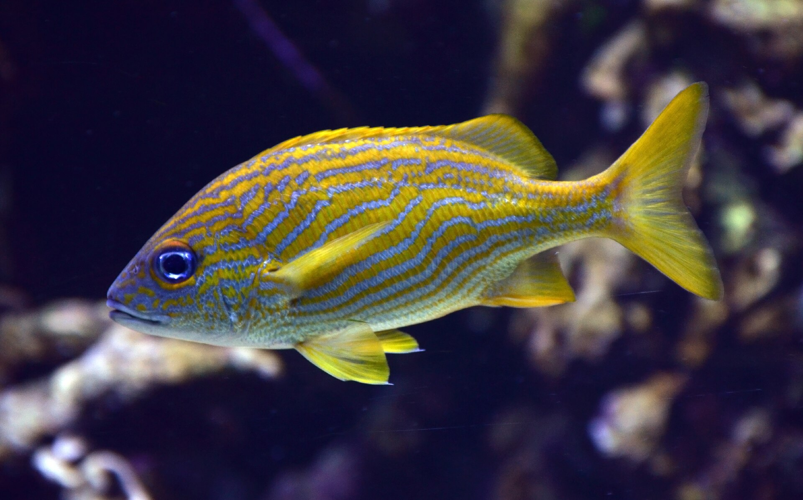
- fish of the day 06.05.2026
- Lestidium nudum
-
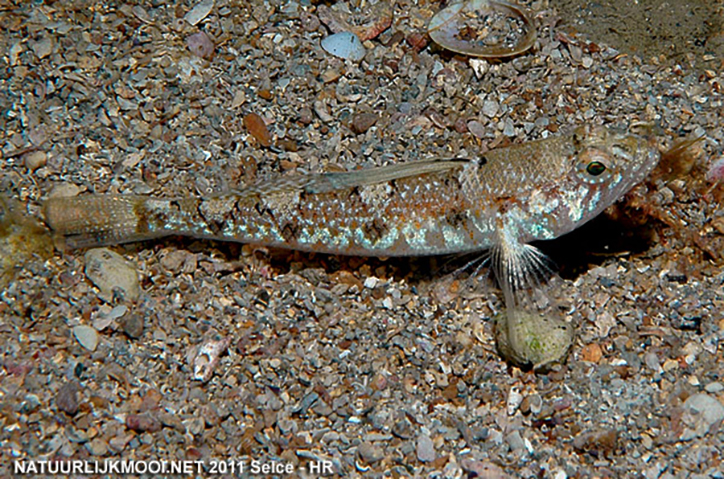
- fish of the day 05.05.2026
- Tigrigobius rubrigenis, Redcheek goby
-
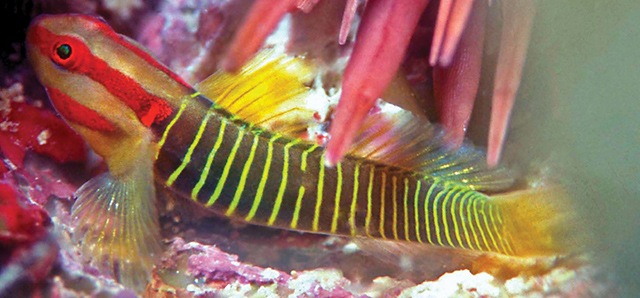
- fish of the day 04.05.2026
- Bajacalifornia burragei, Sharpchin slickhead
-
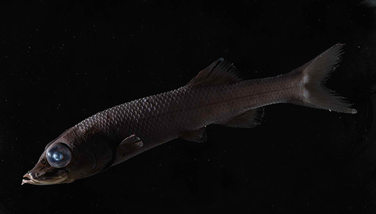
- fish of the day 03.05.2026
- Poroderma panntherium, Leopard catshark
-
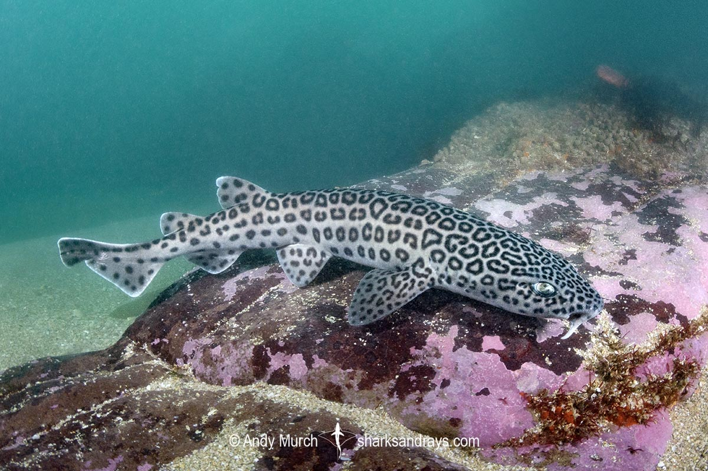
- fish of the day 02.05.2026
- Nothobranchius kilomberoensis
-
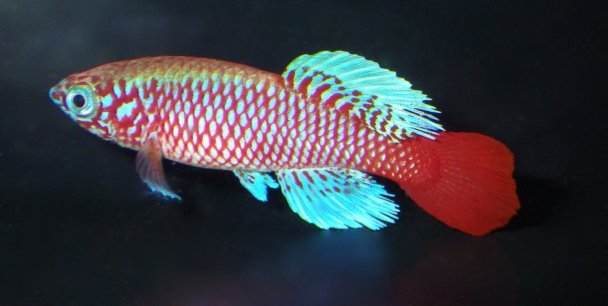
- fish of the day 01.05.2026
- Parachaenichthys charcoti
-
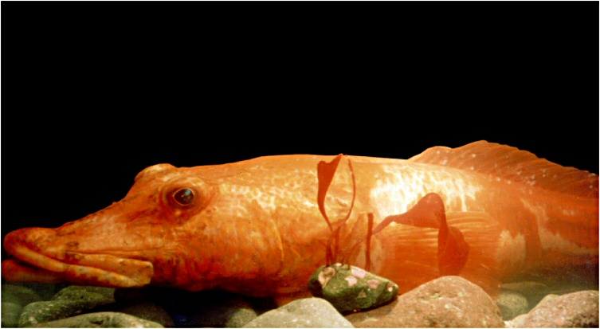
fish of the year

fish of the March results